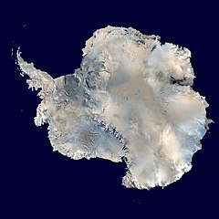

ANTARKTYDA
Antarktyda – kontynent położony najdalej na południe Ziemi,
na którym znajduje się geograficzny biegun południowy. Jest położony w rejonie
Antarktyki na półkuli południowej, niemal w całości na południe od koła
podbiegunowego i otoczony przez Ocean Południowy. Ma powierzchnię 14,2 mln km²,
jest piątym co do wielkości kontynentem po Azji, Afryce, Ameryce Północnej i
Ameryce Południowej, prawie dwa razy większym od Australii. Około 98%
Antarktydy pokrywa polarna czapa lodowa o średniej grubości 1,9 km, która
rozciąga się do wszystkich, prócz wysuniętych najbardziej na północ krańców
Półwyspu Antarktycznego.
